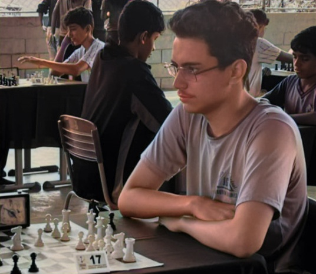

O Xadrez como Aliado no Desenvolvimento Cognitivo!
Aprender e Crescer com o Xadrez.
Nascido em Coronel Fabriciano-MG, Gabriel Alexsander descobriu o mundo do xadrez por meio de amigos, aos seus 15 anos. A complexidade do jogo o fascinou desde o início, apesar de ter achado difícil de aprender no começo.
A primeira impressão que teve do xadrez foi de que era muito complicado e praticamente impossível de se aprender. Com o tempo, percebeu que com técnica, era totalmente possível evoluir no xadrez. A necessidade de concentração, planejamento e adaptação, características essenciais para um bom jogador, o ajudaram a desenvolver habilidades que são desafiadas por seu TDAH. A complexidade do jogo, que exige um alto nível de foco, serve como um treino constante para seu cérebro.
"O TDAH pode ajudar quando o assunto é o hiperfoco pois, aí fico ainda mais interessado, porém, pode me tirar a atenção de outras coisas e fazer do xadrez uma obsessão."
Aprender com os próprios erros tem sido a melhor forma de aprimorar suas habilidades, e Gabriel acredita que o xadrez ensina atenção e estratégia de forma única. "Meu maior aprendizado com o xadrez foi de que pensar antes de agir é crucial para evitar erros e problemas maiores."
Apesar de ter contato com o xadrez há algum tempo e reconhecer seus benefícios, Gabriel não se considera um apaixonado pelo jogo. A complexidade e a estratégia do xadrez o atraem, mas não o ponto de ser uma paixão dominante em sua vida. Ele prefere manter o xadrez como um hobby, sem a pressão de se tornar um jogador profissional ou dedicar-se exclusivamente ao jogo.
"O xadrez é apenas um jogo, porque esse sempre foi seu objetivo. Ele existe para entreter e estimular a mente dos jogadores. O xadrez é apenas um hobby no meu mundo."
Gabriel tem o desejo de compartilhar sua paixão pelo xadrez com outras pessoas. Ele acredita que o jogo pode ser um instrumento de grande importância para o desenvolvimento de diversas habilidades cognitivas e pretende sempre apresentar o xadrez para outros, especialmente para aqueles que, como ele, possuem TDAH.